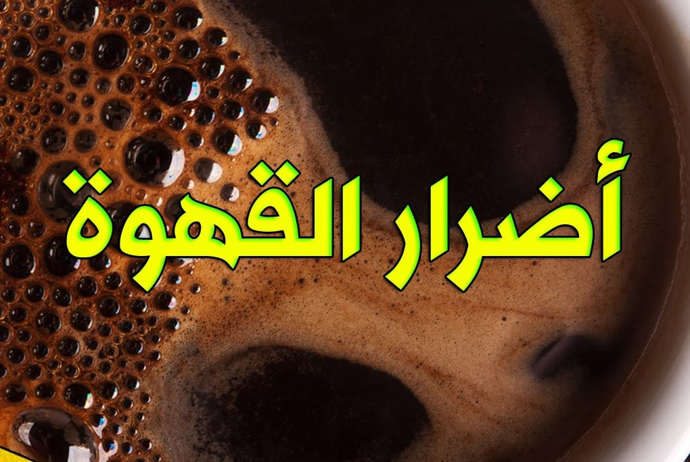
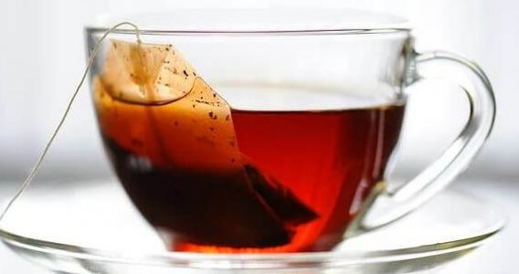

Blog Posts
أضرار القهوة
Written by eng: ahmed Zaherماذا عن الجانب السيئ للقهوة، وما أضرارها و تأثيرها السلبي على صحتك، في هذا المنشور نستعرض بعض من أضرار القهوة.
إليك بعض الأضرار التي قد تنتج عن الإفراط في تناول القهوة:
- زيادة معدل ضربات القلب وارتفاع ضغط الدم.
- القلق أو التوتر الزائد.
- اضطرابات النوم أو الأرق.
لمزيد من المعلومات زور:مدونة شفاء للتغذية.
أضرار الشاي
Written by ahmed Zaherماذا عن الجانب السيئ للشاي، وما تأثيره السلبي على صحتك، في هذا المنشور، نستعرض أضرار الشاي المحتملة.
إليك بعض الأضرار التي قد تنتج عن الإفراط في تناول الشاي:
- تقليل امتصاص الحديد في الجسم بسبب احتوائه على التانين.
- زيادة الأرق وصعوبة النوم عند تناوله بكثرة ليلاً.
- زيادة القلق والتوتر بسبب الكافيين الموجود فيه.
لمزيد من المعلومات زور:ويب طب.